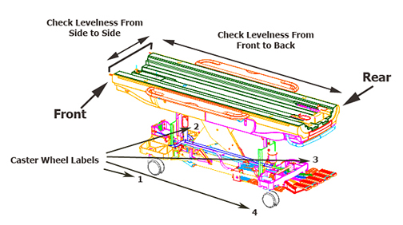
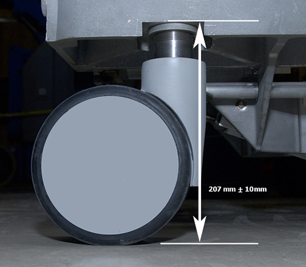

The torque wrench and socket drive contain ferrous material and can become forcibly attracted to the magnet.
Do not bring ferrous tools into the magnet room.
About this task
The patient table is aligned vertically to the magnet by adjusting the caster height. However, the caster height must also be checked for uniform loading to ensure levelness.
Topic ID: id_dky_fzx_xfb
Adjusting the patient table for floor levelness
Procedure
Dock the patient table.
Note If the dock mechanism is not correctly adjusted (during installation), put the patient table in the approximate location it will be in when docked.
Be careful not to let the casters sit in a rut or seam on the floor.
Make sure that the table is positioned on a relatively level surface.
Lock the rear caster brakes.
Raise the patient table to a fully raised position. Using a nonferrous level, check levelness from front to back along the top right or left edge of the bridge, and from left to right across the front of the bridge.
Figure 1. Measuring levelness of patient table

Note Check that all casters are sharing the load equally by applying a small lifting force at each corner of the table, and watching the caster lift easily off the floor. If one caster or two diagonally-mounted casters seem to be unevenly loaded compared to the other casters, they will require adjustment.
Topic ID: id_q5k_gzx_xfb
Checking caster height adjustment
About this task
During installation, this procedure describes how to check the caster height (factory default) settings. If the patient table requires adjustment, continue to Leveling the patient table.
Procedure
To help keep track of measurement data, temporarily label each caster as 1, 2, 3, and 4. Based on the Caster Wheel Labels in Figure 1, label the steering caster as 1 (front left while facing the magnet), and continue labeling in a clockwise direction.
At each of the four caster wheel assemblies, measure the height from the floor to the bottom edge of the aluminum support casting.
Figure 2. Caster measurement

Record the values for each caster in the table that follows.
Note In the table below, the Delta figure is the actual height measured minus the nominal shown in Figure 2. This provides a measurement by which to adjust the caster height.
Table 1. Caster measurement values
Caster
1st Measurement
2nd Measurement
Height
Delta ±
Height
Delta ±
1
2
3
4
Topic ID: id_ecc_hzx_xfb
Leveling the patient table
About this task
Although all four casters look identical on the outside, there is one notable difference when observing each caster assembly inside the caster covers. The patient table front left caster is known as the steer lock wheel, and its caster assembly design has a triangle-shaped bracket that differs from the other three casters.
Procedure
Undock the patient table and put it 2.5 to 5 cm (1 to 2 inches) in front of the dock to do work as close to the docked position as possible.
Note From the previous procedure, both caster assembly covers and the lower side covers are still removed.
Disengage the rear caster brake lock pedal.
Notice
If the dock centering (boss alignment between the table and the dock) has been done, adjust the rear casters to level the table front to back.
For the caster that requires adjustment, remove the caster linkage pin using a 3/8 inch wrench.
Figure 3. Caster linkage pin
Remove the collar bolt using a 7/16 inch wrench. (The illustration below shows a floor-level view looking at the right underside of the caster assembly; the same view for all four casters.)
Figure 4. Removing collar bolt
Slide the collar down the shaft so it rests on top of the caster shaft housing.
Looking from the top down, move the wheel lock lever to the Full Lock position.
Figure 5. Wheel lock lever positions
The wheel lock lever has three positions:
Full Lock or Pivot Lock - Left position locks the caster so the patient table cannot move.
Free Swivel - Middle position lets the caster move freely.
Steer Lock - Right position locks the caster in place, but the wheels can turn.
Turn the caster clockwise (raise the table) or counterclockwise (lower the table) to make adjustments.
Note Turning the caster one complete revolution raises or lowers the caster by 1.5 mm. Quarter or half turns on any caster are not possible because the collar must return to its home position.
Notice
Per design specification, do NOT exceed a raising or lowering adjustment greater than 10 mm (3/8 inch).
Measure the caster height again and record the value in Table 1.
Do Step 3 through Step 6 in reverse order to reassemble the caster bolt and linkage pin.
After all casters are adjusted, measure the table levelness, and adjust the casters as necessary by repeating this procedure.
After the table is level, reattach the caster assembly covers, lower the side covers, and dock the patient table.
Topic ID: id_h4m_hzx_xfb
Finalization
Procedure
Dock the table.
Make sure that the cradle release function works properly.
Make sure that the LPCA connects to the cradle and that the cradle can move into the bore.